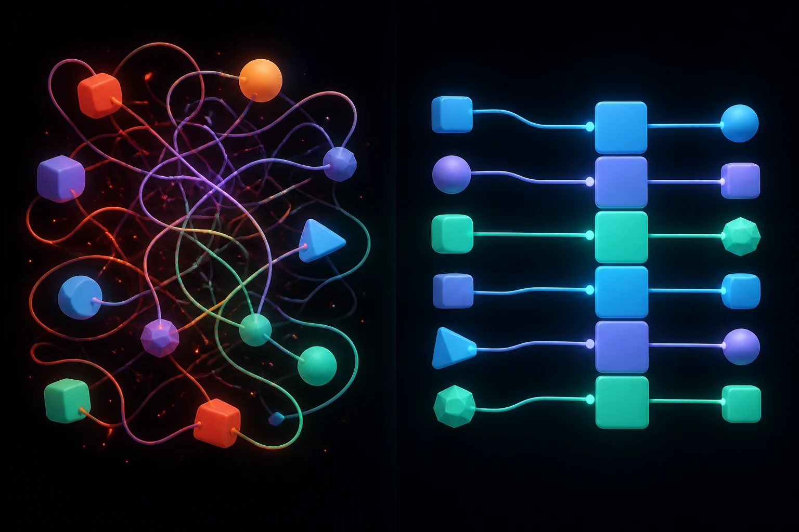

바이브코딩은 혼자 할 땐 빠르고 편해요. 하지만 둘 이상이 각자 AI에게 다른 방식으로 지시하면, 코드가 서로 부딪히고 누가 뭘 바꿨는지 알 수 없게 됩니다.

환경이 없으면 코드가 엉키고, 갖추면 모두가 같은 결로 정돈됩니다.
전부 일상적인 비유로 설명할게요. 기술보다 "왜 하는지"를 이해하는 게 먼저예요.
"우리 프로젝트는 이런 규칙으로 만든다"를 적은 문서 한 장을 모두가 공유해요. AI가 이걸 먼저 읽고 일관되게 코딩합니다.
게임의 세이브 포인트처럼, 작업을 단계마다 저장해요. 망가져도 되돌릴 수 있고, 누가 무엇을 바꿨는지 다 남습니다.
요리 레시피처럼 "필요한 재료 목록"을 함께 둬요. 그러면 누구 컴퓨터에서든 똑같은 환경이 자동으로 차려집니다.
이름 짓는 법, 폴더 나누는 법을 미리 약속해요. 매번 AI에게 다시 설명 안 해도 일관된 결과가 나옵니다.
API 키 같은 비밀은 집 열쇠와 같아요. 코드에 그대로 넣어 공유하면 사고로 이어집니다. 따로 안전하게 관리해요.
"사람 온보딩 문서 = AI 온보딩 문서."
레포만 받으면 사람이든 AI든 같은 규칙으로 일하게 만들면 끝!
Git은 어렵게 느껴지지만, 사실 "저장하고 → 공유하는" 반복일 뿐이에요. 먼저 큰 그림 3가지를 잡고, 실제 동작을 하나씩 따라가 볼게요.
작업의 순간을 사진처럼 찍어 보관하는 "타임머신"이에요. 언제든 그 시점으로 돌아갈 수 있죠.
내가 직접 작업하고 저장하는 공간. 여기서 찍은 사진은 아직 나만 가지고 있어요.
찍은 사진을 올려 팀과 함께 보는 공용 앨범. 여기 올려야 비로소 "공유"가 됩니다.

Git은 작업의 순간들을 점점이 저장하는 타임라인 — 가지(branch)를 쳐서 안전하게 실험하고 다시 합칩니다.
작업을 Git으로 관리하겠다고 첫 선언을 하거나, 팀의 기존 프로젝트를 통째로 내려받아요.
git initgit clone <주소>내가 지금까지 어떤 파일을 만들고 고쳤는지 한눈에 확인해요. 저장 전 점검 단계입니다.
git status바뀐 파일 중 "이번에 저장할 것들"만 골라 장바구니(스테이징)에 담아요.
git add .담은 것을 "한 시점"으로 확정 저장하고, 무엇을 했는지 한 줄 메모를 남겨요.
git commit -m "로그인 화면 추가"내 컴퓨터에 저장한 사진들을 인터넷 저장소(GitHub)에 올려 팀과 공유해요.
git push-u 등). 외우지 말고 AI에게 "이거 깃허브에 올려줘"라고 하면 연결까지 한 번에 해줍니다.팀원이 올린 최신 변경을 내 컴퓨터로 받아와요. 작업 시작 전에 습관처럼 하면 좋아요.
git pull원본을 건드리지 않고, 복사한 가지(branch)에서 자유롭게 새 기능을 시도해요.
git switch -c 새기능가지에서 한 작업을 원본에 합쳐요. 합치기 전에 팀원(또는 나)이 한 번 검토합니다.
위 명령들을 "협업 순서"로 꿰면 이렇게 돌아가요. 각자 자기 가지에서 일하고, 올려서 검토받은 뒤 합칩니다.
git pull
→
② 내 가지 만들기 git switch -c
→
③ 작업 + 자주 commit
→
④ git push
→
⑤ PR로 검토·합치기
↺
🔑 핵심: 모두가 각자 가지(branch)에서 일하고 합치기 전 한 번 검토하면, 같은 프로젝트를 동시에 만져도 서로 안 부딪혀요. 이 한 바퀴가 "같이 잘하기"의 전부입니다.
충돌이 뭐예요? 같은 파일의 같은 줄을 두 사람이 서로 다르게 고쳤을 때, Git이 "둘 중 뭐가 맞아?"라고 물어보는 상황이에요. 망가진 게 아니라 안전장치가 작동한 것입니다.
어떻게 풀어요? 화면에 표시된 충돌 부분을 그대로 복사해 AI에게 붙여넣고 "이 충돌 풀어줘"라고 하면 됩니다. 혼자 끙끙댈 필요 없어요.
예방법: 작업 시작할 때 git pull 먼저, 그리고 작게 자주 올리면 충돌이 거의 생기지 않아요.
순서대로 하나씩만 하면 됩니다. 어려운 명령어는 AI에게 "이거 해줘"라고 부탁해도 돼요.
작업을 저장하고 되돌릴 수 있게 첫 단추를 끼워요. AI에게 git 저장소 만들어줘 라고 해도 됩니다.
프로젝트 목표, 폴더 구조, "이렇게 해줘 / 이건 하지 마"를 자유롭게 적어요. 팀원 모두가 같이 봅니다.
API 키 등은 .env 에 넣고, 예시용 빈 양식인 .env.example만 공유해요. .gitignore로 진짜 키는 가립니다.
이름 규칙, 폴더 나누는 법을 짧게 정리. 길 필요 없어요 — 반쪽짜리라도 있으면 일관성이 확 올라갑니다.
AI가 짠 코드도 사람이 한 번 훑어보고 합쳐요. "돌아가니까 그냥 합치기"는 나중에 사고의 씨앗이 됩니다.
바이브코딩만의 협업 요령이에요. 명령어를 외우기보다, 귀찮고 헷갈리는 건 그냥 AI에게 시키는 게 핵심입니다.
AI가 한 번에 너무 많이 바꿨다면 "작은 단위로 나눠서 커밋해줘"라고 하세요. 나중에 되돌리기·검토가 훨씬 쉬워집니다.
"커밋 메시지 써줘", "이 변경 PR로 올려줘"라고만 해도 됩니다. git 명령어를 직접 외울 필요가 없어요.
AI가 API 키를 코드에 그대로 넣는 경우가 있어요. "비밀 키는 .env로 빼고 .gitignore에 넣어줘"로 한 번 정리하면 안전합니다.
새 작업을 시작할 때 "CLAUDE.md 먼저 읽고 그 규칙대로 해줘"라고 하면, 팀원들 결과물과 결이 어긋나지 않아요.
전부 쓸 필요 없어요. 이름만 알아둬도 AI와 대화할 때 훨씬 수월해집니다.
작업 저장·되돌리기·함께 공유의 기본. 협업의 토대가 되는 가장 중요한 도구예요.
AI에게 말로 시켜 코드를 만드는 도구. 설명서(CLAUDE.md)를 읽고 규칙대로 작성해줍니다.
API 키 같은 민감 정보를 코드와 분리해 보관. 공유는 빈 양식(.env.example)만 합니다.
만든 사이트를 인터넷에 공개하는 도구. 클릭 몇 번이면 URL이 생겨 누구든 볼 수 있어요.

"레포만 클론하면 누구든
같은 규칙으로 일하게."
이 한 문장만 기억하세요. 사람을 새로 맞이하는 준비가 그대로 AI를 맞이하는 준비가 됩니다. 거창할 필요 없이, 오늘 위 체크리스트 1번부터 시작해 보세요.